Monday, October 30, 2017 – A regular day
Planned for paper to be done by noon—but turned it in at midnight.
Dinner: Went to formal hall—pumpkin soup, lamb steak with peas and potatoes, and pear and almond pie.

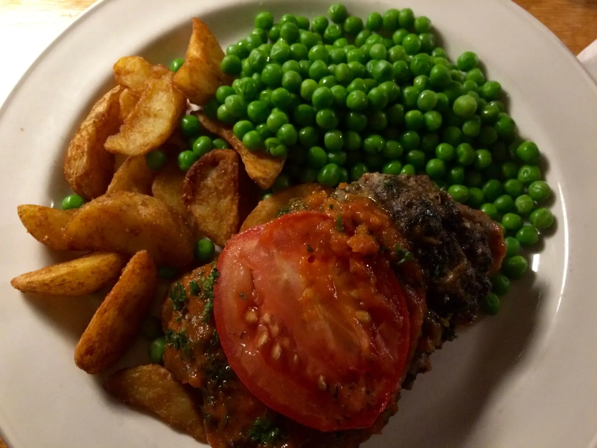

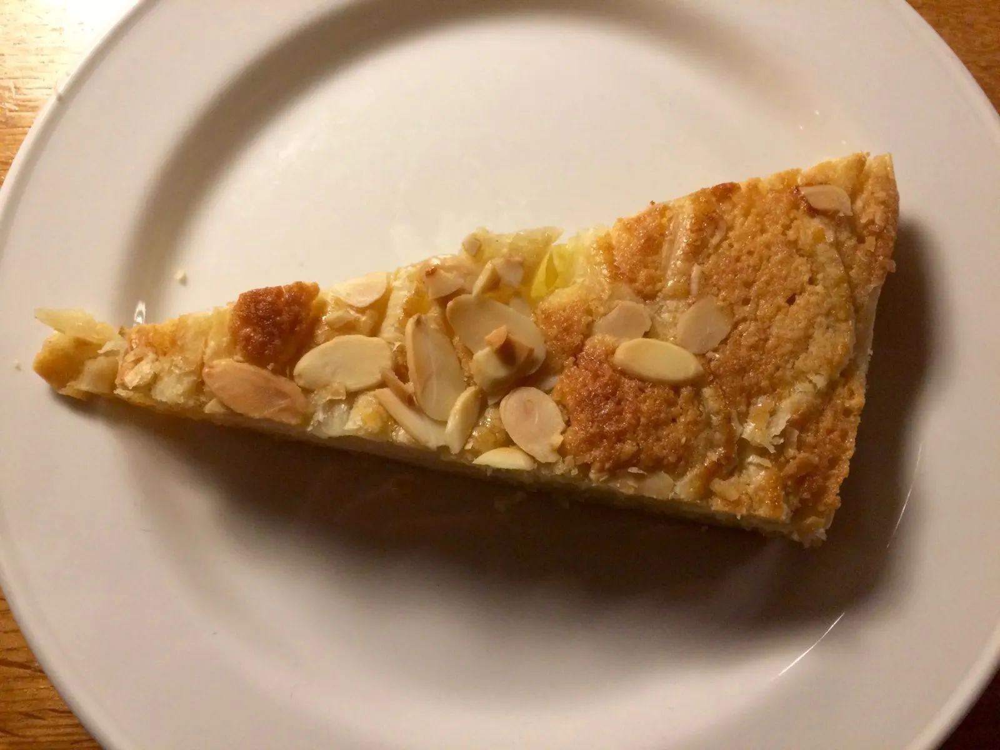
Chilled a bit in the staircase afterwards with the other third years. Someone stole Nour’s cheese.
Tuesday, October 31, 2017 – Halloween
This morning, the dining hall lady was dressed up with face paint and had an orange and black spider on her head.
Lemsip after breakfast—still sick—guess this will become the norm.
Turned in my second paper
Shayna lent me her blazer
Now all attention for my all-day interview tomorrow!
Traveled from Oxford train station —>London Paddington —> Hotel. It was a nice hotel, too much food for dinner —lamb kabob with rice, couldn’t finish half of it
Made myself go to bed at 11
Wednesday, November 1, 2017 – Day in London
Up at 6, light makeup, breakfast, Tube, into a building by the pier in Canary Wharf. You can tell that Canary Wharf is a major business district; one of the buildings had news headlines displayed on the outside, and professionally dressed people bustled about.
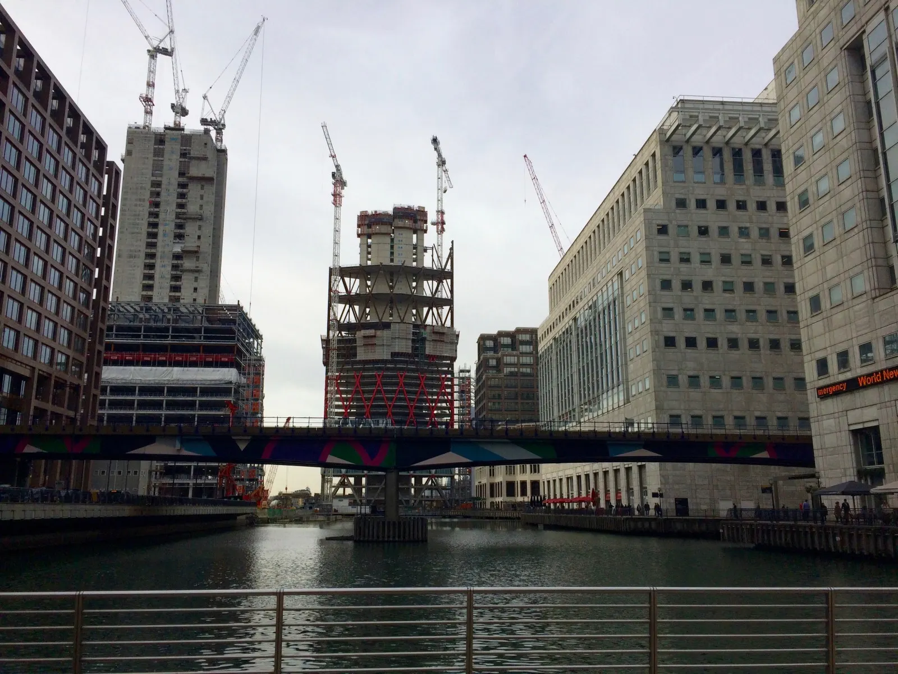
The Assessment Centre/interview was four hours. I was quite relieved when I came out, and then realized how hungry I was. Got lunch at Spitalfields Market—treated myself to a Byron burger at Byron and a chocolate praline cookie at the Pret café.

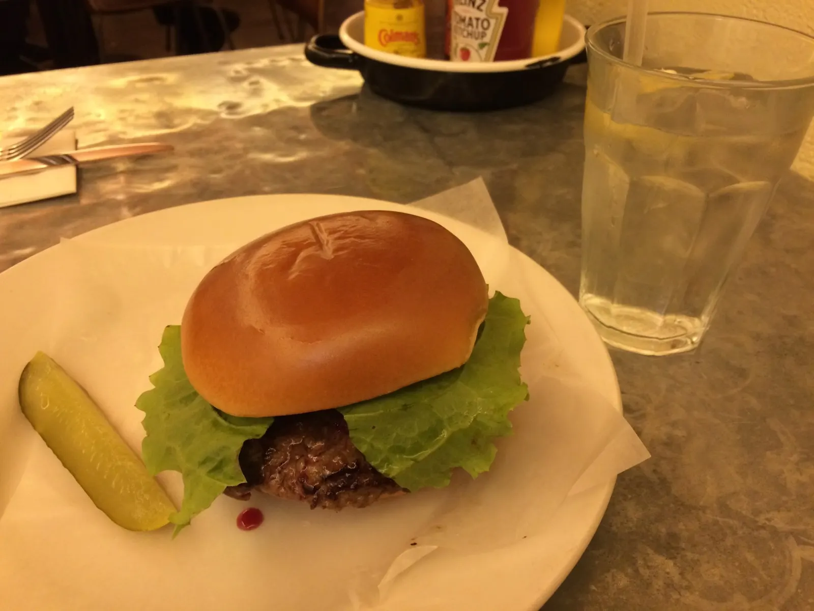

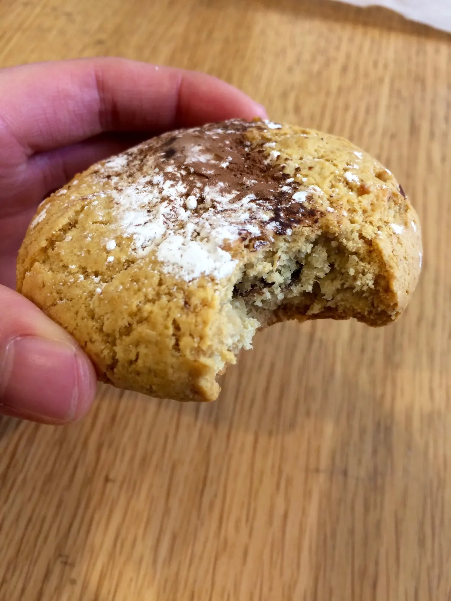

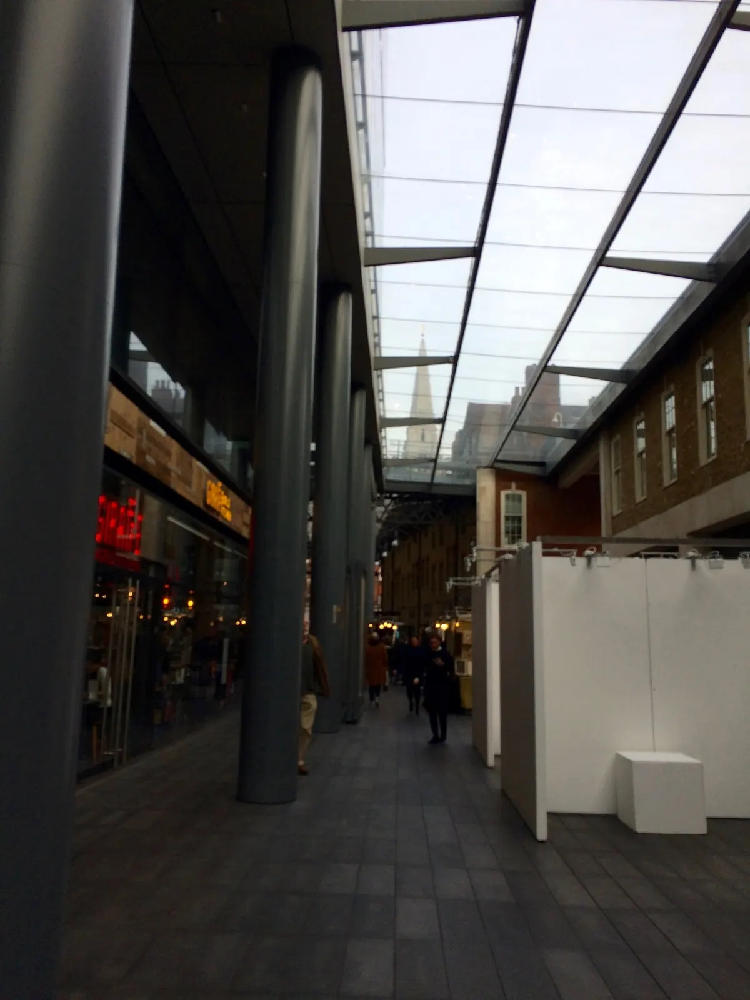
This is the first time I’ve been off campus since arriving at Oxford, I realized. And what a beautiful day it was! It was so refreshing to have a change of scenery.
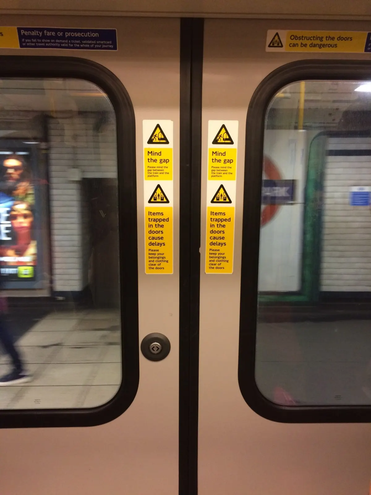
Took the Tube to Hyde Park. “Mind the gap between the train and the platform,” the intercom voice stated at every stop. So this is where the “Mind the gap” phrase comes from!
Had a couple hours to spare before heading back to Oxford, so walked around the V&A (Victoria and Albert) museum.
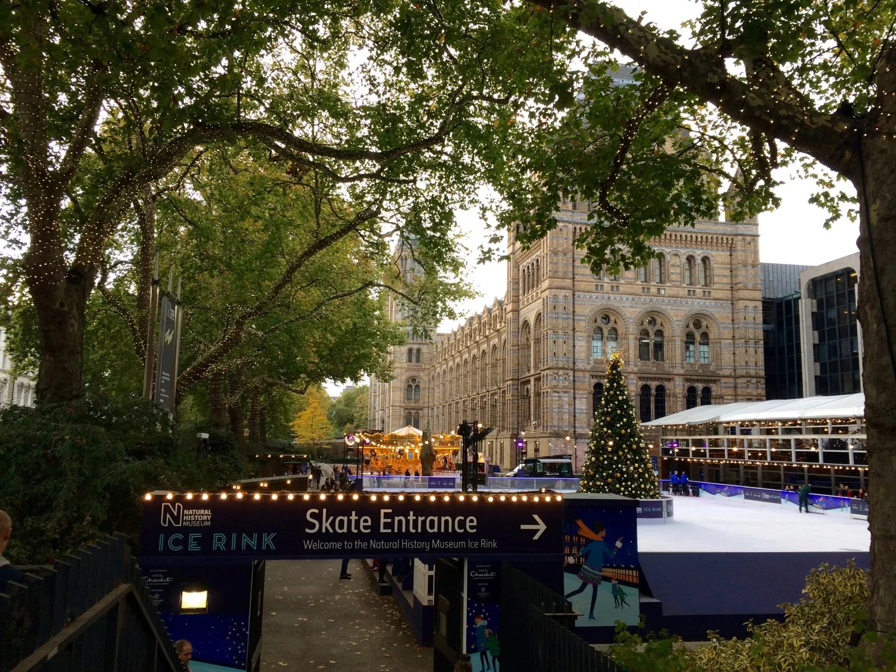
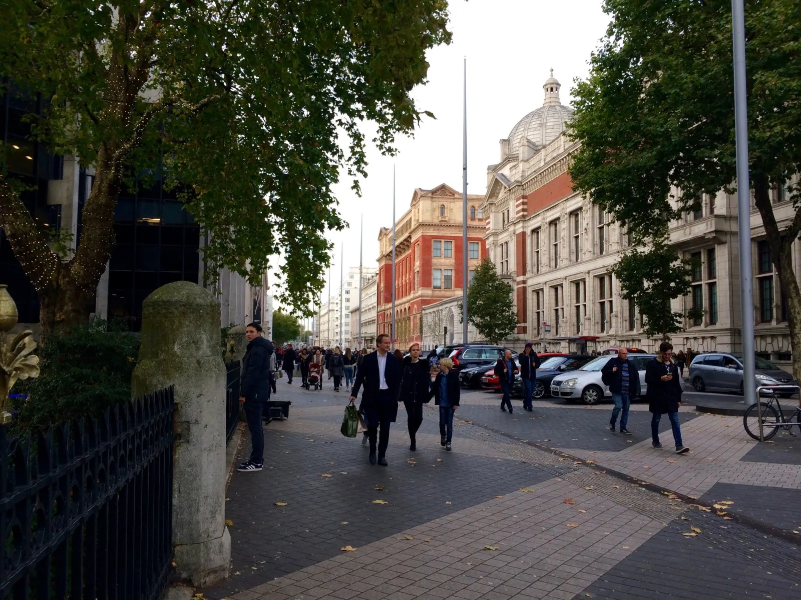
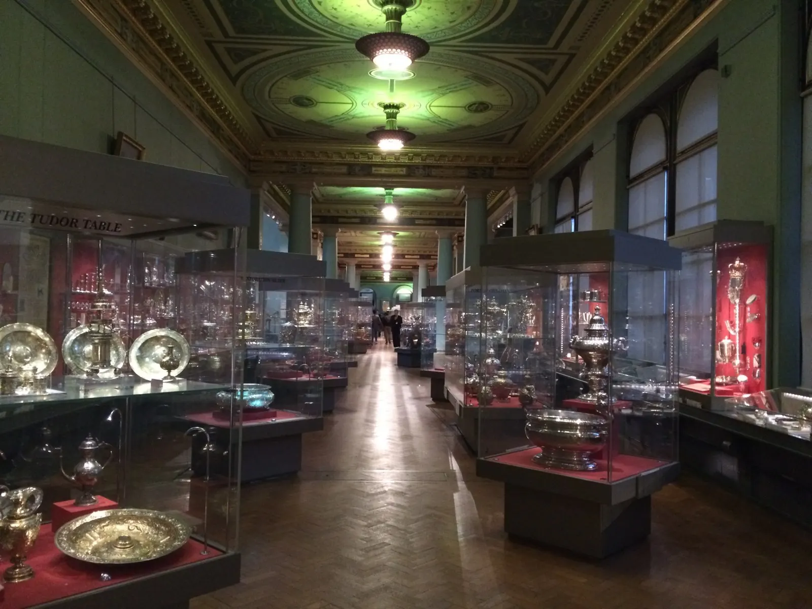
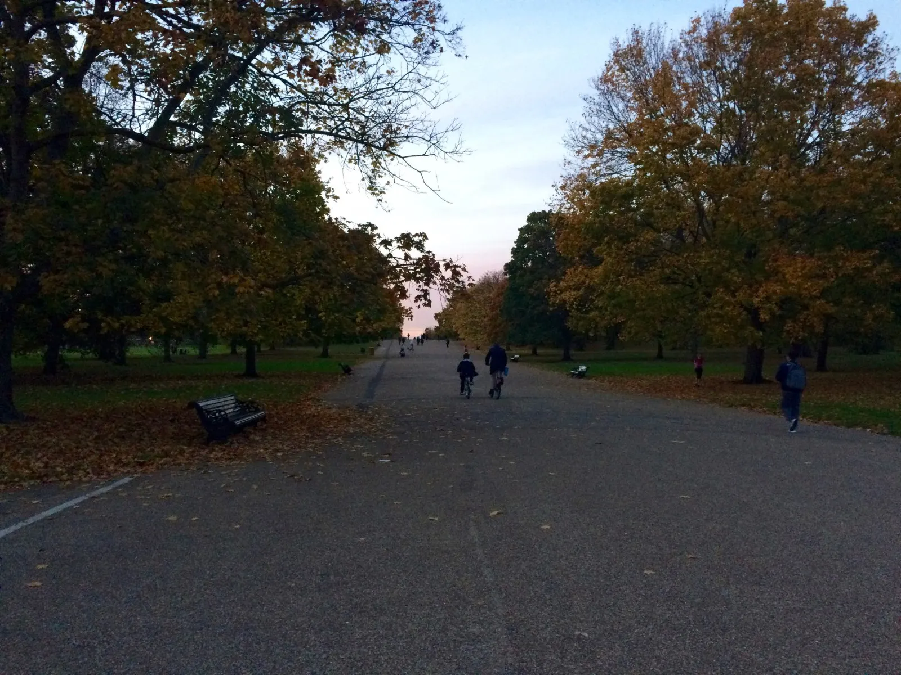
Came back to Oxford and de-stressed by going to a crew date—this week with mens hockey. I had a penne pasticciate. It wasn’t as fun this time as I didn’t talk as much. Did the usual traditions and went to Vinnies afterward where people played the trivia game with pinkies and then Park End, the club everyone goes to on Wednesdays. I was quite tired but figured that I should at least see what Park End was all about. It was a crowded and rowdy dance scene. Someone put streaks of red paint on my face. I danced until I felt like I could fall asleep standing up, and walked home alone in the cold after a couple hours. Not much bang for my buck (£5 to be exact), but at least I’ve been to Park End.
Thursday, November 2, 2017 – One of my more difficult essay topics
I got crushed during my IR tutorial this morning. Topic for this week: What approach best explains the role of institutions in promoting regional and international commerce? First of all, I didn’t answer the question the right way—I didn’t give a specific theory, though I unknowingly argued for intergovernmentalism. Several times my tutor asked what I meant by certain terms I used like “transnational society,” and since I got the term from a certain book but only read the intro and conclusion, was at a loss for words. I hadn’t even thought about what these terms referred to. I was also caught off guard when she asked for an example for some of my statements, which I got from the readings. In one instance I gave a general statement but then backed it up with a quote focusing on one region. I found that one of my points actually undermined my argument. I also got in trouble when I brought up a new concept mentioned in a quote earlier but didn’t know what it actually meant. Things I learned today:
- Know where you’re going before you start writing
- Don’t get so bogged down by all the readings that you forget what you’re looking for
- Use examples
- Look at origins of institutions more closely and try to link each of them (one regional, one international example) to the theory
Basically, my tutor found a lot of weaknesses in my argument. I felt bad and offered to fix it, but she said that was not necessary, as the essay is meant to be a starting point from which to discuss the topic in more depth. You learn and move on.
Friday, November 3, 2017 – Opera and Entz!
Woke up at 7:30, which is surprisingly early for me.
Did laundry, at last, after 3 weeks.
Went to a sociology lecture on religion in politics, which was really interesting.
A couple hours before dinner, finally got started on books for my next essay on globalization.
After dinner, went to G&D’s Ice Cream with Odelia to watch an a cappella group, then watched Miriam (from the tennis team) perform in an opera written by an Oxford student. The music was purposely discordant, and it was a very good performance. Then went to the Entz back at Catz, which is always so much fun because everyone’s there and dressed up (though I wasn’t dressed up for today’s theme: iconic duo), which means I can move around and talk to different people, and the night is never dull.